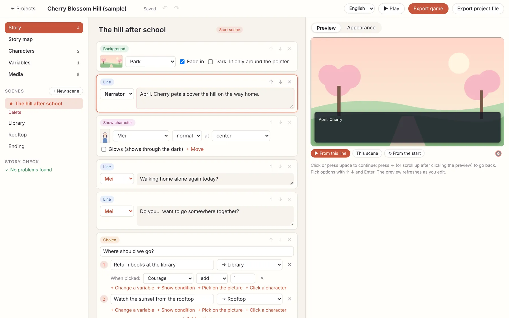
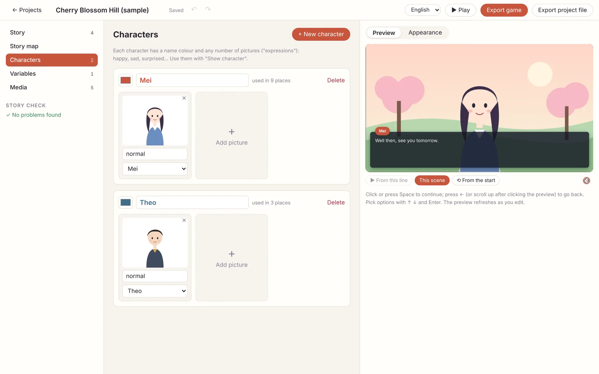
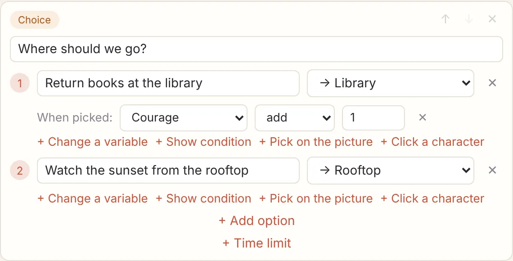
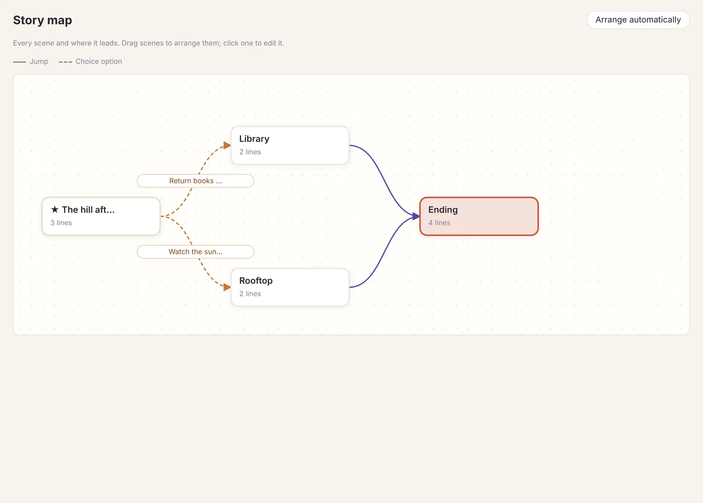
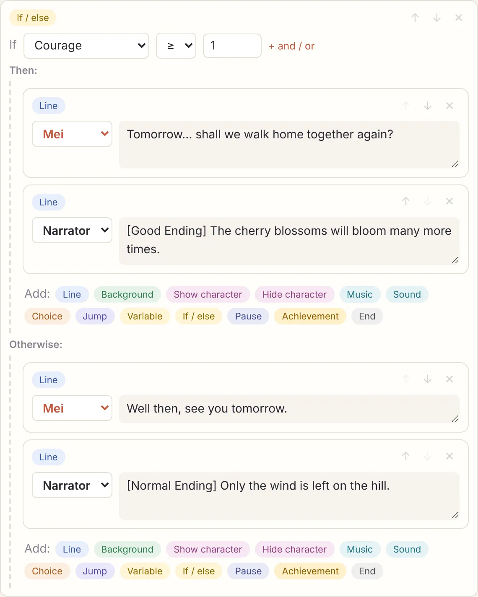
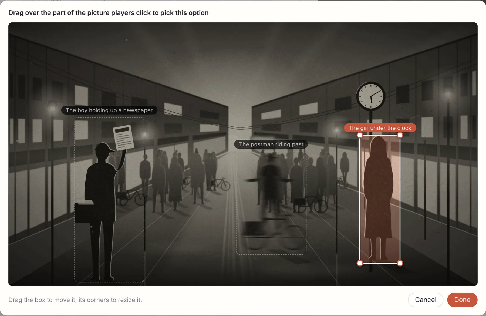
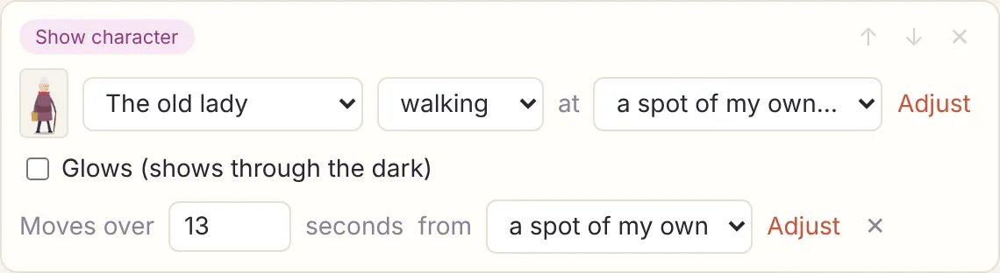
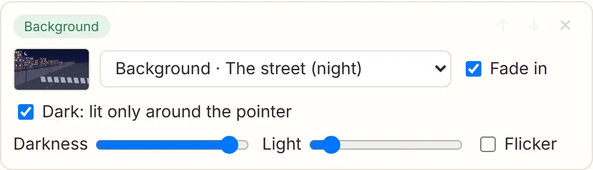
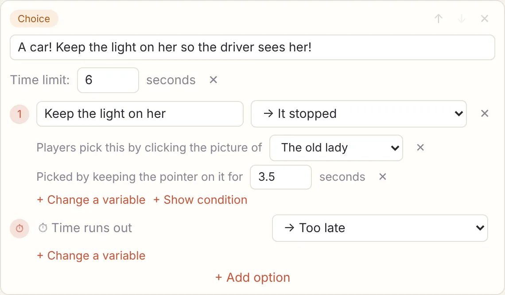
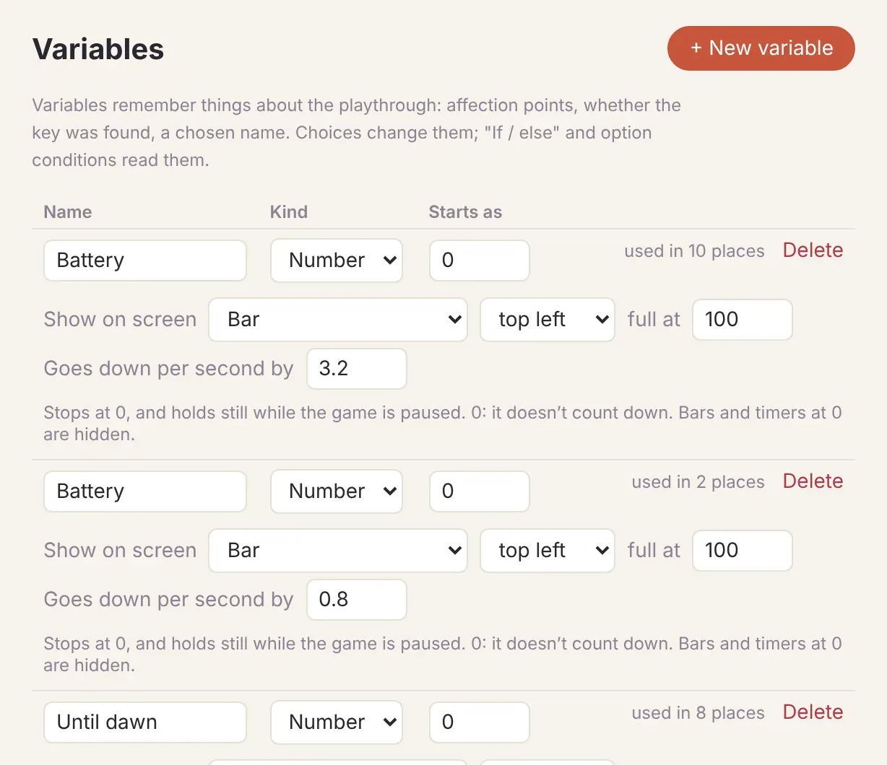

From your first line to branches, variables, picking things on the picture and real-time play with a
countdown, then exporting. The basics take ten minutes; read the rest when you need it.
The fastest way to learn: when you create a story, pick a template — Cherry Blossom Hill
(branches and variables), One Photograph (picking on the picture), Night Shift (real-time play) — see how
it's built, then make it your own.
Basics
1. Install, start a story
Download the Windows, macOS or Linux version from the home page. The installers
aren't signed yet: on Windows click “More info → Run anyway”; on macOS right-click and choose “Open”.
Open ZenNovel. You start on the list of projects.
Under New story, click Blank project and give it a name.
Or pick a template and start from a finished story.
Every story is a folder on your computer: project.json plus the pictures and music it uses.
Where new stories go is shown above the list; click Change… to move it.
2. Write lines
The editor has three columns: on the left the scenes and the parts of the project (StoryStory mapCharactersVariablesMedia), in the middle the cards of the current scene, on the right the preview.

The first scene of the Cherry Blossom Hill template.
Each line is a Line card. Press Enter at the end of a line to start the
next one; Shift+Enter is a line break.
Pick who speaks on the left of the card: Narrator or one of your characters.
The Add: row at the bottom of the scene adds other kinds of card: background, show
character, choice, music…
The top right of each card moves it up or down or deletes it. Ctrl+Z undoes,
Ctrl+Y redoes (on a Mac, ⌘+Z and
⌘+Shift+Z).
Everything saves by itself; the title bar says Saved.
3. Backgrounds, characters, sound
Backgrounds
Add a Background card and pick a picture from the list (or
Upload image…), or use a Solid color. Tick
Fade in for a gentle change.
Characters and their pictures
Click Characters → + New character on the left: a name, a
name colour, then Add picture. Each picture has an expression name, like “happy” or
“sad”.

Show character: pick the character, the expression and where they stand (left /
center / right). Showing the same character again changes their expression or spot.
Hide character: they leave the stage.
Music and sound
Music: Play music (with loop and volume) or
Stop music (the current music fades out). To change the music, add another music
card.
Sound: plays once — a door, a camera shutter.
All pictures and sounds live in Media. Drag files straight in, any size; each one
shows where it's used and can be replaced in one go.
4. Choices and scenes
Click + New scene on the left to add a scene. Three kinds of card connect scenes:
Choice: an optional question on top, then one row per option with where it goes —
a scene, or Continue below.
Jump: go straight to another scene without asking.
End: the story ends here.

The first option goes to “Library” and adds 1 to “Courage” (variables are in section 6).
The Story map shows every scene and where it leads: solid lines are jumps, dashed
lines are choice options. Drag scenes around or click Arrange automatically; click a
scene to edit it.

The story starts at the scene marked ★. To change it, select a scene and click
Set as start.
5. Play, appearance, story check
Preview: click the picture or press Space to go on, ← to go back,
↑↓ and Enter to pick options. Under the preview:
▶ From this line (starts at the card you're editing, with the background and
characters already in place), This scene,
⟲ From the start.
Appearance: next to the preview, set the dialogue box's colour, opacity, text size,
corners and height, the typing speed, the choice buttons' colours, and the language of the player's own
buttons.
The whole game: ▶ Play at the top right plays exactly what
players get, in a new window: title screen, menu (right-click or ☰), saves, autosave, history.
Story check: the bottom left always lists problems — a jump to a scene that doesn't
exist, a missing picture, a scene that ends without going anywhere, a scene nobody can reach… Click
Show me to go to the card.
That's enough for a complete branching story. What follows makes it play more like a game.
Going further
6. Variables and conditions
Variables remember the player's journey: affection points, whether they found the key, where they've been.
Variables → + New variable, then choose a kind (Number
/ Yes / no / Text) and a starting value.
Change it: under an option, click + Change a variable (when picked: Courage add
1), or put a Variable card anywhere. You can add, subtract, set or toggle.
Read it: an If / else card — if… then… otherwise….
+ and / or combines conditions (all of these are true / any of these is true).
Options can have a + Show condition too: the option only appears when it's true.

Cherry Blossom Hill's ending: Courage ≥ 1 gives the good ending, otherwise the normal one.
7. Endings and achievements
Give each ending its own scene, finishing with an End card — or, as above, split
one scene into different endings with If / else.
Achievement card: the name players see (e.g. “True ending”) and the Steam API name
(e.g. ENDING_TRUE). The Steam build unlocks that Steam achievement; other builds show a small
notice on screen.
8. Picking on the picture (as in One Photograph)
Rather than buttons, players can click things in the picture.
Under an option, click + Pick on the picture. A large view of the stage opens:
drag out an area, and clicking there picks the option. Drag the box to move it, drag its corners to
resize; Adjust changes it later.
In Show character, choose a spot of my own… as the
position, drag the picture anywhere, resize it with the dot at its top right, or
Fill the stage. Split a picture into layers of the same size (one per person in
the photograph) and you can swap them one by one as players choose.
“Save picture” in the game menu lets players keep what's on screen as an image.

One Photograph: each of the three people is an area you can click.
9. Real-time play (as in Night Shift)
Countdowns, a torch, a light that follows people — each is just a setting on an ordinary card. No code.
Pauses
A Pause card waits a few seconds, then the story carries on by itself; players can't
skip it. Use it to give things on screen time to happen.
Time limits
Click + Time limit on a choice card and set the seconds. A
⏱ Time runs out row appears: where to go when time is up (with no destination, the
story continues below). A bar along the top of the screen counts down.
Movement
On a Show character card, click + Move: how long it takes
and where it starts (where it stands or a spot of my own).
That's how people cross the road and cars drive up the street. The story keeps going while things move.

Darkness and a torch
Tick Dark: lit only around the pointer on a Background card
and set the Darkness and the Light size; it can
Flicker too. The mouse (a finger on phones) is the torch. Characters with
Glows (shows through the dark) stay lit in the dark: street lamps, headlights,
windows.

Click a character, keep the light on it
On an option, + Click a character makes the clickable area follow that character's
picture, even while it moves. Add + Keep the light on it and players must keep the
light (the pointer) on it for a number of seconds to pick it; moving away pauses the count rather than
resetting it.

Night Shift: keep the light on the old lady for 3.5 seconds within 6 and the car stops; otherwise it goes
to “Too late”.
Numbers on screen: batteries and countdowns
Next to a number variable, click On screen & countdown…: show it as a bar, a
number or a countdown (min:sec), top left or top right. Set
Goes down per second by and it runs down by itself (stopping at 0, and holding still
while the game is paused). Bars and countdowns at 0 are hidden, so start at 0 and set a value when you want
one to appear.

Putting it together
Night Shift's four events in one minute are scheduled by a scene called “On patrol” that keeps doing three
things:
An If / else checks the countdown: at zero, jump to “Dawn”; when it's time for an
event that hasn't happened yet, jump to that event's scene.
Pause for 0.5 seconds.
Jump back to “On patrol”.
Each event's scene jumps back to “On patrol” when it's done. Create a story from the Night Shift template
and open the Story map to see the whole shape.
Publishing
10. Export the game
Click Export game at the top right and choose the builds you want:
Web: a Folder (index.html + assets) for larger games, or
One HTML file that's easy to send around. For itch.io, zip the web build and
upload it as an HTML project.
Windows and Linux: the Standard build (about 100 MB; looks the
same on every computer). You can also have each build packed as a .zip for itch.io and downloads.
Steam: tick Prepare for Steam and enter your Steam App ID. This
adds Steam achievements and the Steam overlay; saves can sync with Steam Cloud. See
Publishing on Steam.
If the story check still has errors, you'll be asked before exporting.
11. Saving, backups, teamwork
Every story is a folder: copy it, keep it in cloud storage, or put it in a git repository and work on it
with others. Show in folder in the project list opens it.
Open project folder… opens a project from anywhere: a USB stick, a shared drive, a
git repository.
Export project file saves the whole project as one .json file, a backup you can
open again with Import project. An exported web game (index.html) can be imported
back too.